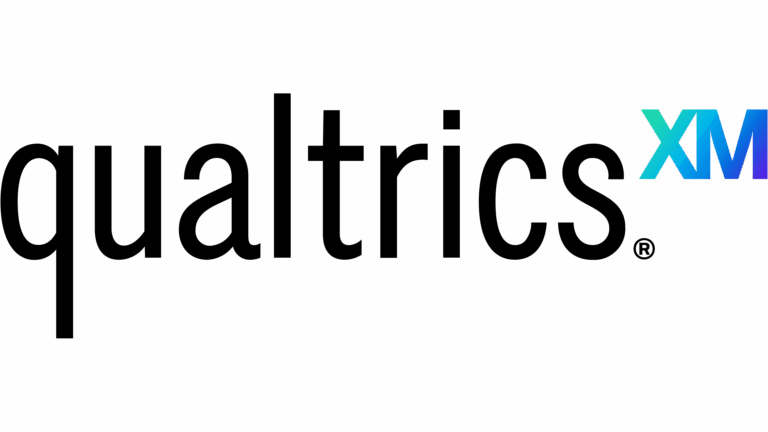

About

Qualtrics is a cloud based Experience Management (XM) platform designed to create, distribute, and analyze surveys for a wide range of usages. It enables users to build highly customizable surveys, automate actions based on responses (such as skip logic), and visualize data through reporting tools and dashboards. While not all of its features are relevant to the goals of the NEFSC, the core feautres are highly beneficial to creating more automated and reproducible surveys, Some of these features include:
Survey Creation: Qualtrics has a user friendly interface with intuitive functionality, allowing new users at the SSB to create surveys without coding (exception of advanced aesthetics using
javascriptandcss). It supports a variety of question types, including multiple choice, open text, and matrix questions.Distribution: Surveys can be distributed through multiple channels including personalized QR codes for individual participants. This is particularly useful for our goal of reaching audiences that prefer to complete surveys online rather than on paper. Furthermore, it helps automate the data collection process by directly feeding responses into the Qualtrics database which can be transferred to NMFS databases for analysis and storage.
Data Analysis: Qualtrics has its own built in data visualization tools where users can create custom reports. While this may be helpful for researchers at NEFSC, we envision most of the in depth analysis will take place once the data has been transferred over to internal NOAA databases.
NEFSC and Qualtrics
Starting in 2026, the Social Sciences Branch (SSB) began to use the Qualtrics platform to build its 2026 Greater Atlantic Region Commercial Fishing Business Cost Survey. The shift towards Qualtrics was driven by the need for a more reproducible, flexible, and cost effective solution for building and maintaing its surveys over time. Qualtrics offers many features that allow users to build complex surveys with skip logic, modify aesthetics of the survey, and widely distribute surveys through QR codes and web links to individual participants. Not every functionality of Qualtrics is relevant to what the SSB needs, but the main feautres and flexibility have shown to be highly beneficial to our survey efforts. We anticipate the use of Qualtrics to continue for future survey years as long as the software continues to meet our needs.
Free vs Paid Tiers
Qualtrics provides a free tier and a paid tier. We explored the possibility of relying solely on the free tier and compared its features to the paid tier. The free tier provides basic survey creation and distribution capabilities, but it has limitations on the number of responses, question types, and customization options. The paid tier offers much more control over the size and aesthetics of the survey. Because we wanted the digital copy to look as close to possible as the physical copy, we use the paid tier to access the customization features.
| Product Area | Features in Free Accounts | Restrictions in Free Accounts |
|---|---|---|
| Survey builder | • Create, edit, copy or delete surveys • 8 question types: ◦ Multiple choice ◦ Text entry ◦ Text / graphic ◦ Matrix table ◦ Slider ◦ Form field ◦ Rank order ◦ Side by side • Choice randomization • Piped text • Use survey blocks • Access blocks and questions saved to the library • Survey flow editor • Survey logic: ◦ Skip logic ◦ Display logic ◦ Branch logic • Can collaborate on surveys with other users |
• No advanced question types • No autocomplete based on supplemental data • No custom code (this also means many options in the rich content editor are unavailable): ◦ No HTML markup ◦ No custom Javascript ◦ No inserting images ◦ No iFrame support ◦ No redirect links in the survey (this includes both survey options and end of survey elements) • No survey translations |
| Customization and branding | • Limited Look & Feel: ◦ Theme (select from pre-built themes) ◦ Layout (simple, flat, modern, or classic) ◦ General (button text, progress bar, questions per page) ◦ Style (color and contrast, font and font size, spacing) ◦ Motion tabs (page transition, autofocus, auto-advance) ◦ Background (color and contrast, container) |
• Restricted Look & Feel (including no custom code): ◦ General (no header/footer) ◦ Style (no custom CSS) • No Logo ◦ Background (no background image) • No branded or vanity URLs |
| Methodology | • 50+ expert-built survey templates • 1 sample project with example questions and pre-loaded results |
• Only basic ExpertReview (methodology and question quality) • No imported data projects • No guided projects or programs, including COVID-19 XM Solutions • No ExpertReview compliance (fraud detection, sensitive data policy) or response quality (bot detection, ballot box stuffing) |
| Survey distribution | • Distributions: ◦ Anonymous link ◦ Social media ◦ QR codes |
• No email • No SMS • No offline app • Cannot purchase online samples from inside account • No XM Directory |
| Response management | • View, filter, and edit responses | • No quotas • No screen-outs • No response weighting |
| Reporting & analytics | • Access to Data & Analysis tab: ◦ Real-time collected responses data table ◦ Real-time Results dashboard with editable data visualizations ◦ Reports that can be customized and shared ◦ Data exports (CSV, TSV, Excel, XML, SPSS and more) |
• No basic or advanced analytics (Text iQ, Stats iQ, Crosstabs, etc.) • No dashboards |
| Workflows | • None | • No Workflows |
| Account administration | • None | • No admin reports, tools, or brand settings • No Home page |
| Extensions and integrations | • None | • No API or third-party integrations |
| 24/7 support | • Qualtrics Support AI Assistant • Self-serve articles on qualtrics.com/support including detailed step-by-step guides • Self-serve tutorials and video lessons on XM Basecamp • Access to other Qualtrics users and experts through Experience Community |
• No email, chat or phone support • No direct product or program guidance |